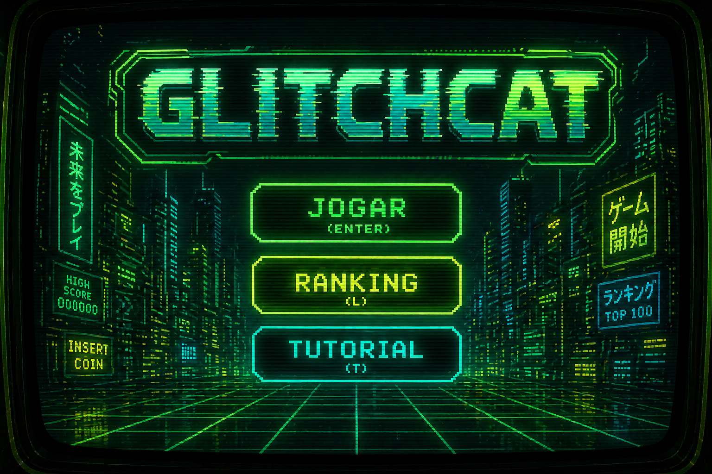
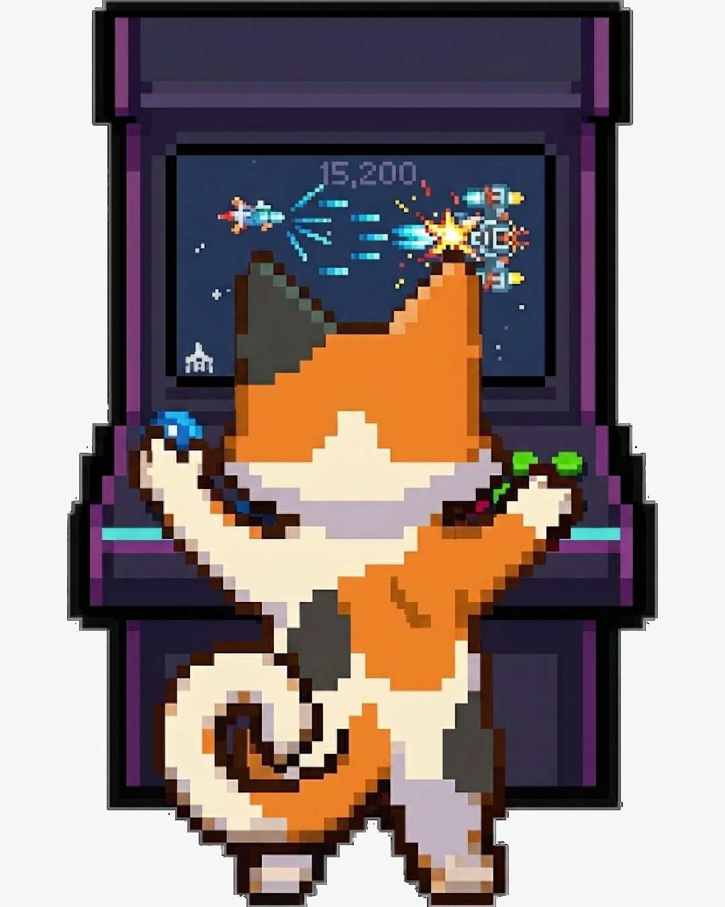
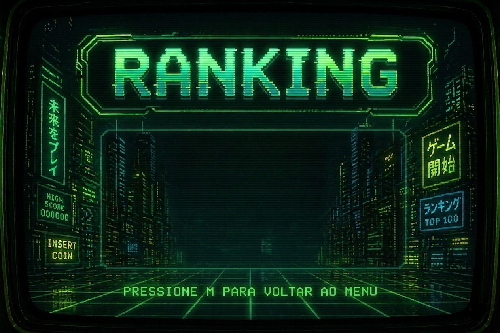
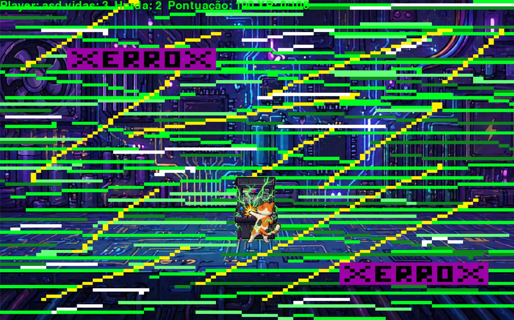

Como você chegou aqui?

Sobrevivendo no mundo digital



Um jovem programador se encontra preso na CPU do próprio PC e a gora ele precisa usar do glitches pra sobreviver aos desafios da internet! Você deve ajudar o pobre garoto a se arrepender de nunca ter apagado seu histórico...

Recebemos avaliação do Grupo Dourado e de Victor Kayan e aplicamos as correções sugeridas: ajustamos o contraste do subtítulo do header, unificamos o alinhamento da seção de instruções e aumentamos o espaçamento entre as seções principais. Todos os quatro princípios CRAP foram revisados e corrigidos na versão final.
↓ Download do Jogo (.zip)